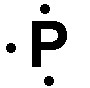
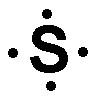

1) Which of the following would have the highest lattice energy?
A) Na2O
B) Li2O
C) MgO*
D) Li2O
There are two parts that are involved in lattice energy. One is the charge on the ions (this is the bigger priority), and the other is the distance between the ions. This is only testing on knowing that the larger the charge on the ions, the larger the lattice energy. Since Mg has the highest charge, MgO will have the highest lattice energy.
2) The statement "if two elements form more than one compound the ratios of the masses of the second element that combine with a fixed mass of the first element will always be ratios of small whole numbers" belongs to:
A) The Law of Multiple Proportions*
B) Dalton's Atomic Theory
C) The Law of Definite Proportions
D) The Law of Conservation of Mass
Dalton's Atomic Theory: Matter is composed of small indestructible particles.
The Law of Conservation of Mass: In a chemical reaction, matter is neither created nor destroyed.
The Law of Multiple Proportions: If two elements form more than one compound, the ratios of the masses of the second element that combine with a fixed mass of the first element will always be ratios of small whole numbers.
The Law of Definite Proportions: Samples of a compound will always contain the same proportion of elements by mass.
3) What is the name of the ClO- ion?
A) chlorate
B) chlorite
C) hypochlorite*
D) perchlorate
4) An ionic bond is best described as
A) A bond formed when electrons are shared between two atoms
B) A bond between two non-metals
C) A bond formed when electrons are transferred from one atom to another*
D) A bond between two metals
A covalent bond is formed when two atoms share electrons in order to achieve a stable electron configuration. In a covalent bond, the atoms involved have similar electronegativity, meaning they have similar tendencies to attract electrons. This sharing of electrons allows both atoms to fill their outermost energy levels and achieve greater stability.
An ionic bond is formed when electrons are transferred from one atom to another, resulting in the formation of ions. In an ionic bond, one atom donates electrons to another atom, resulting in the formation of a positively charged ion (cation) and a negatively charged ion (anion). The attraction between these opposite charges holds the ions together and forms an ionic bond.
5) What is the name of the following polyatomic ion? HPO42-
A) phosphate
B) phosphite
C) hydrogen phosphate*
D) dihydrogen phosphate
6) Determine the name for FePO4·4H2O
A) Iron phosphate tetrahydrate
B) Iron (III) phosphate trihydrate
C) Iron (III) phosphate tetrahydrate*
D) Iron (III) phosphate quadhydrate
FePO4·4H2O is an ionic compound and a hydrate. To name the ionic compound portion give the name of the cation followed by the name of the anion. In this case that would be iron (III) phosphate. The hydrate portion of the formula is named based on the number of water molecules. Since this hydrate has 4 water molecules in its formula the prefix 'tetra-' is used before the word 'hydrate'. Thus the correct name is iron (III) phosphate tetrahydrate.
7) Calculate the formula mass for Sn(ClO4)4.
A) 324.5 amu
B) 872.6 amu
C) 218.2 amu
D) 516.5 amu*
To calculate the formula mass for Sn(ClO4)4, take the number of each element from the periodic table and multiply it by the formula mass of the element, then sum all the formula masses from each element. Sn: 118.71 amu x 1 = 118.71 amu Cl: 35.45 amu x 4 = 141.8 amu O: 16.00 amu x 20 = 300 amu Total: 516.5 amu
8) What is the name of the acid H3PO4?
A) Phosphorous acid
B) Hydrophosphorous acid
C) Phosphoric acid*
D) Hydrophosphoric acid
9) Which of the following is the correct Lewis structure for P-?
A) *
B)
C) 
D)
Since P- has a -1 charge, it will have one more electron than the neutral P. P is in the 5A period, so the Lewis structure should have 5 + 1 = 6 electrons. Thus the correct Lewis structure is .
10) Give the name for Cl2O7.
A) Dichloride heptoxide*
B) Chloride oxide
C) Chloride (II) oxide
D) Chloride heptoxide
Both Cl and O are nonmetals, so we will need to put a Greek prefix before the name of each element, then give the second element an -ide ending. However, mono- is dropped from the beginning in cases where there is only 1 of the first element in the compound. Since there are 2 Cl and 7 O, the name is Dichloride heptoxide.
11) Which of the following is the correct Lewis structure for S ?
A)
B)
C) *
D) 
Since S is in the 6A group, it should have 6 valence electrons in its Lewis structure. Thus is the answer.
12) What is the name of the following polyatomic ion? C2H3O2-
A) carbohydroxate
B) dicarbon trihydrogen dioxide
C) acetite
D) acetate*
13) What is the name of the following polyatomic ion? PO43-
A) phosphide
B) phosphate*
C) phosphite
D) phosphoxide
14) Which of the following is the correct formula for the compound sodium sulfide?
A) Na2S*
B) NaS
C) NaS2
D) So2S
Sodium is a fixed charge metal and sulfide is a nonmetal cation, so this will be an ionic compound, and the charges can be know from the periodic table. Sodium will carry a +1 charge because it is in the 1A group. Sulfide will carry a -2 charge because sulfur is in the 6A group. The lowest common multiple of 1 and 2 is 2. Therefore we will need 2 sodium ions and 1 sulfide ion. That gives us a formula of Na2S.
15) What is the formula for the compound sodium acetate?
A) NaC2H3O2*
B) NaNH4
C) Na2CO3
D) Na2C2H3O2
Sodium is a fixed charge metal and acetate is a polyatomic ion. Since sodium acetate contains a polyatomic ion, it is an ionic compound. Therefore, to get the formula you must balance the charges of the two ions. Sodium will carry a +1, whereas acetate will carry a -1 charge. The lowest common multiple of 1 and 1 is 1, therefore there will need to be 1 sodium ions and 1 acetate ions. That gives us a formula of: NaC2H3O2.
16) Calculate the molecular mass for C7H14O.
A) 29.02 amu
B) 98.18 amu
C) 114.2 amu*
D) 101.1 amu
To calculate the molecular mass for C7H10O, take the number of each element from the periodic table and multiply it by the molecular mass of the element, then sum all the molecular masses from each element. C: 12.01 amu x 7 = 84.07 amu H: 1.008 amu x 10 = 14.11 amu O: 16.00 amu x 1 = 16.00 amu Total: 114.2 amu
17) What is the empirical formula for a sulfur oxide (compound composed of sulfur and oxygen) that is 66.7% sulfur by mass?
A) SO2
B) S2O
C) SO*
D) SO3
Since the sulfur oxide compound is is 66.7% sulfur by mass, it will be 100% - 66.7% = 33.3 % oxygen by mass.
Assuming a 100 g sample gives us: 66.7 g sulfur and 33.3 g oxygen.
Next convert those grams to moles. 66.7 g S x \( \frac{1 mol S}{32.06 g S} \) = 2.08 mol S 33.3 g O x \( \frac{1 mol O}{16.00 g O} \) = 2.08 mol O
Then divide by the lower of the two mol amounts, and get the lowest whole number ratio.
18) What is the empirical formula for N2H6?
A) N2H3
B) NH3*
C) N3H
D) N2H6
An empirical formula represents the simplest ratio of elements present in a compound. It shows the relative number of atoms of each element in a compound without specifying the actual number of atoms. To get the empirical formula you need to divide the subscripts in the equation (N2H6) by their greatest common divisor. In this case 1 and 2 are divisible by 2, which gives NH3 as the empirical formula.
19) Give the name for Fe2O3.
A) Iron oxide
B) Iron (II) oxide
C) Iron (III) oxide*
D) Diiron trioxide
Since Fe is a metal and O is a nonmetal, this is an ionic compound. Since Fe is a variable charge metal we need to calculate the charge on Fe and put a roman numeral in the name indicating the charge. three O will carry a total negative charge of -6, which is 3 x -2. Therefore, the total positive charge must be +6, and that positive charge is carried by two Fe. This means that each Fe must carry a +3 charge. The roman numeral is placed after the name of the metal, and the anion receives an -ide ending, so the correct name is Iron (III) oxide.
 *
*